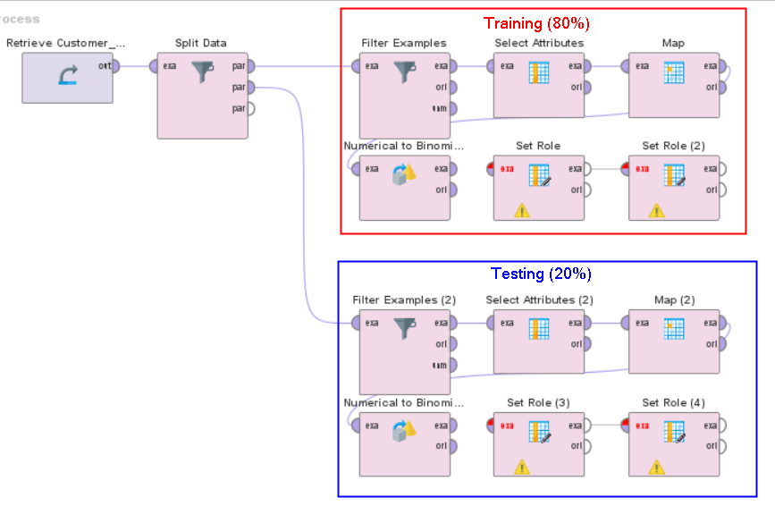
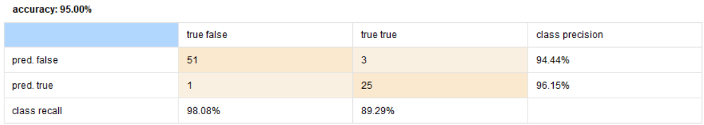

Implementasi Naive Bayes
Note
Untuk session ini, kita akan menggunakan dataset berikut: Customer Behaviour
Source: https://www.kaggle.com/datasets/denisadutca/customer-behaviour
Split data menjadi dua bagian: training dan testing. Untuk langkah ini, gunakan operator Split Data. Gunakan 80% sebagai rasio training dan 20% sebagai rasio testing.
Lakukan preprocessing data terhadap dataset training dan testing. Ikuti langkah-langkah berikut:

Filter Examples untuk menghapus data kosong
Select attributes, optional (User ID, Gender, Age, EstimatedSalary, Purchased)
Map (untuk kolom Gender, dari Female menjadi 0 dan Male menjadi 1)
Parse Numbers (untuk kolom Gender)
Normalize (untuk semua kolom, kecuali User ID dan Purchased)
Set Role (User ID sebagai id, dan Purchased menjadi “label”)
{kind=link}
Buat model Naive Bayes dengan menggunakan operator Naive Bayes. Gunakan dataset training sebagai inputnya.
Note
Gunakan node “Naive Bayes (Kernel)” untuk membuat model Naive Bayes dengan. Kernel memungkinkan kita untuk mengatur weight dari masing-masing kelas.
Hubungkan model Naive Bayes yang sudah digunakan dengan node Apply Model. Tujuannya supaya kita dapat mengevaluasi model yang sudah kita buat.
Untuk mengevaluasi model yang sudah kita buat, gunakan operator Performance (Classification). Hubungkan node Apply Model dengan node Performance.
Jika sudah selesai, tekan tombol Run untuk melihat hasilnya.
{kind=link}
Analisa Result
Setelah proses selesai, kita akan mendapatkan hasil berupa confusion matrix. Confusion matrix adalah tabel yang digunakan untuk menggambarkan kinerja model klasifikasi pada set data uji yang nilai sebenarnya diketahui.
{kind=link}
Berdasarkan matrix ini, kita dapat melihat total akurasi dari model yang sudah kita buat adalah 95%. Artinya, model yang sudah kita buat sudah cukup baik dalam melakukan prediksi.
Note
Hasil dari matriks ini mungkin akan berbeda dengan hasil yang akan kalian dapatkan.